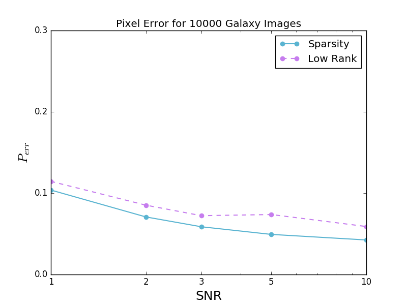
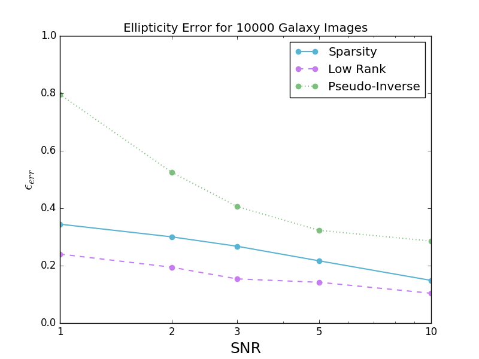

Space variant deconvolution of galaxy survey images
By Samuel Farrens, Wed 08 March 2017, in category Science
By Samuel Farrens, Wed 08 March 2017, in category Science
This post gives a brief summary of a paper I recently submitted to A&A, which you can find here.
The Python code for performing deconvolution can be found here.
The Point Spread Function or PSF of an imaging system (also referred to as the impulse response) describes how the system responds to a point (unextended) source. In astrophysics, stars or quasars are often used to measure the PSF of an instrument as in ideal conditions their light would occupy a single pixel on a CCD. Telescopes, however, diffract the incoming photons which limits the maximum resolution achievable. In reality, the images obtained from telescopes include aberrations from various sources such as:
In order to recover the true image properties it is necessary to remove PSF effects from observations. If the PSF is known (which is certainly not trivial) one can attempt to deconvolve the PSF from the image. In the absence of noise this is simple. We can model the observed image \(mathbf{y}\) as follows
where \(\mathbf{x}\) is the true image and \(\mathbf{H}\) is an operator that represents the convolution with the PSF. Thus, to recover the true image, one would simply invert \(\mathbf{H}\) as follows
Unfortunately, the images we observe also contain noise (e.g. from the CCD readout) and this complicates the problem.
This problem is ill-posed as even the tiniest amount of noise will have a large impact on the result of the operation. Therefore, to obtain a stable and unique solution, it is necessary to regularise the problem by adding additional prior knowledge of the true images.
One way to regularise the problem is using sparsity. The concept of sparsity is quite simple. If we know that there is a representation of \(\mathbf{x}\) that is sparse (i.e. most of the coefficients are zeros) then we can force our deconvolved observation \(\mathbf{\hat{x}}\) to be sparse in the same domain. In practice we aim to minimise a problem of the following form
where \(\Phi\) is a matrix that transforms \(\mathbf{x}\) to the sparse domain and \(\lambda\) is a regularisation control parameter.
Another way to regularise the problem is assume that all of the images one aims to deconvolve live on a underlying low-rank manifold. In other words, if we have a sample of galaxy images we wish to deconvolve then we can construct a matrix \(\mathbf{X}\) where each column is a vector of galaxy pixel coefficients. If many of these galaxies have similar properties then we know that \(\mathbf{X}\) will have a smaller rank than if images were all very different. We can use this knowledge to regularise the deconvolution problem in the following way
In the paper I implement both of these regularisation techniques and compare how well they perform at deconvolving a sample of 10,000 Euclid-like galaxy images. The results show that, for the data used, sparsity does a better job at recovering the image pixels, while the low-rank approximation does a better job a recovering the galaxy shapes (provided enough galaxies are used).
 